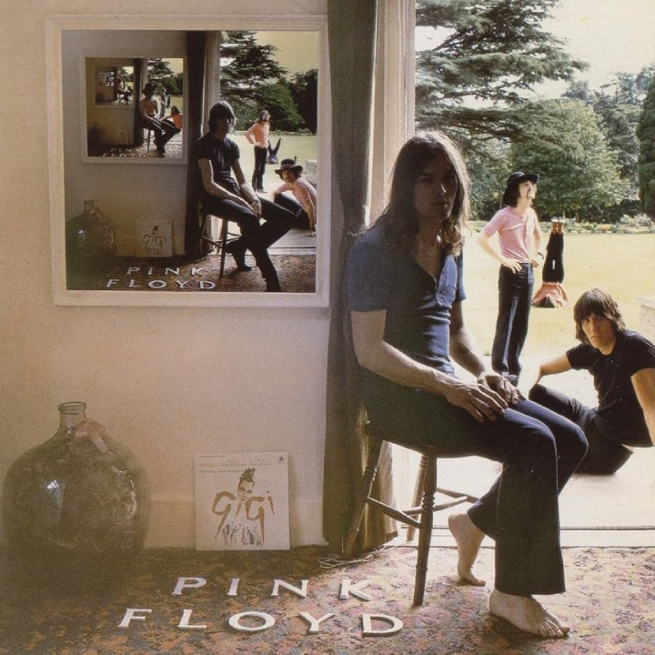
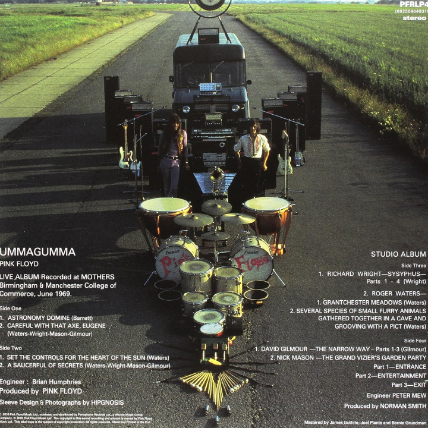

Ummagumma
Wydany: 7 listopada 1969 | Wytwórnia: Harvest Records | Format: Podwójny album
O albumie
"Ummagumma" to czwarty album Pink Floyd, wydany jako podwójny album składający się z dwóch zupełnie różnych części. Pierwsza płyta to nagrania koncertowe z tras z 1969 roku — zarejestrowane w Manchester College of Commerce oraz Birmingham's Mothers Club. Druga płyta to eksperymentalne solowe kompozycje każdego z czterech członków zespołu.
Tytuł "Ummagumma" pochodzi ze slangu Cambridge i jest eufemizmem na stosunek seksualny — charakterystyczny dla poczucia humoru wczesnego Pink Floyd. Album był śmiałym eksperymentem: każdy muzyk dostał połowę strony winylowej, aby wyrazić swoją indywidualną wizję artystyczną bez ograniczeń narzucanych przez pracę zespołową.
Solowe kompozycje są skrajnie różne — od awangardowych kolaży dźwiękowych Rogera Watersa, przez elektroniczne eksperymenty Ricka Wrighta, po perkusyjne improwizacje Nicka Masona i gitarowe eksperymenty Davida Gilmoura. Album jest dokumentem twórczej wolności i eksperymentatorskiego ducha wczesnego Pink Floyd.
Ikoniczne okładki i grafiki

Oryginalna okładka albumu
Zaprojektowana przez Hipgnosis (Storm Thorgerson i Aubrey Powell), okładka przedstawia czterech członków zespołu siedzących przed budynkiem, z obrazem w obrazie — każde kolejne zdjęcie zawiera mniejszą wersję poprzedniego, tworząc nieskończony regres wizualny. Ten efekt "Droste" był nowatorskim zabiegiem graficznym jak na rok 1969.

Tył okładki
Na tylnej okładce członkowie zespołu siedzą w odwróconej kolejności względem przedniej strony — kolejny element wizualnej gry Hipgnosis. Minimalistyczna estetyka i surrealistyczny humor były znakiem rozpoznawczym wczesnych projektów okładek Pink Floyd.
Lista utworów
| PŁYTA 1 — LIVE | |||
|---|---|---|---|
| Nr. | Tytuł | Długość | Opis |
| 1. | Astronomy Domine | 8:32 | Psychodeliczny klasyk z ery Syd Barretta, grany na żywo z pełną energią |
| 2. | Careful with That Axe, Eugene | 8:58 | Narastający utwór instrumentalny zakończony słynnym krzykiem Watersa |
| 3. | Set the Controls for the Heart of the Sun | 9:10 | Hipnotyczny, orientalny utwór z dominującymi perkusją i syntezatorami |
| 4. | A Saucerful of Secrets | 13:31 | Monumentalny utwór tytułowy z poprzedniego albumu — kulminacja koncertu |
| PŁYTA 2 — STUDIO (SOLOWE KOMPOZYCJE) | |||
|---|---|---|---|
| Nr. | Tytuł / Autor | Długość | Opis |
| 1. | Sysyphus (Parts 1–4) — Rick Wright | 13:46 | Czteroczęściowa suita fortepianowo-syntezatorowa, od klasycznych pasaży po chaotyczne eksperymenty elektroniczne |
| 2. | Grantchester Meadows — Roger Waters | 7:28 | Akustyczna, sielankowa ballada o łąkach Cambridge — zaskakująco spokojna jak na Watersa |
| 3. | Several Species of Small Furry Animals... — Roger Waters | 4:59 | Awangardowy kolaż dźwiękowy z głosami zwierząt i szkockim akcentem — jeden z najbardziej absurdalnych utworów w dyskografii zespołu |
| 4. | The Narrow Way (Parts 1–3) — David Gilmour | 12:08 | Trzyczęściowa kompozycja Gilmoura — od gitarowych eksperymentów po pełny rockowy utwór z wokalem |
| 5. | The Grand Vizier's Garden Party — Nick Mason | 8:42 | Trzyczęściowa kompozycja perkusyjna Masona z elementami fletu granego przez jego żonę Lindy |
Całkowity czas trwania: 87:14 (2 płyty winylowe)
Osiągnięcia i wyróżnienia
Sprzedaż
Ponad 1 milion sprzedanych kopii na całym świecie
UK Albums Chart
Miejsce #5 w Wielkiej Brytanii
Billboard 200
Miejsce #74 w USA
Znaczenie historyczne
Jeden z pierwszych podwójnych albumów w historii rocka progresywnego
Oceny krytyków
Uznany za ważny dokument eksperymentalnej fazy Pink Floyd
Certyfikaty UK
Silver (BPI)
Analiza kluczowych utworów
Careful with That Axe, Eugene (Live)
Jeden z najbardziej niepokojących utworów w całej dyskografii Pink Floyd. Utwór buduje napięcie przez kilka minut cichej, pulsującej muzyki, by eksplodować słynnym, przeraźliwym krzykiem Rogera Watersa — jednym z najbardziej rozpoznawalnych momentów w historii rocka progresywnego.
Wersja koncertowa z "Ummagumma" jest uważana za jedną z najlepszych interpretacji tego utworu. Surowa energia nagrania na żywo dodaje dramatyzmu, którego nie sposób odtworzyć w warunkach studyjnych. Utwór nie ma stałej struktury — każde wykonanie było inne, co czyniło go idealnym materiałem na improwizowane koncerty.
Sysyphus — Rick Wright
Najbardziej ambitna z solowych kompozycji na albumie. Wright, klasycznie wykształcony muzyk, stworzył czteroczęściową suitę inspirowaną mitem o Syzyfie — człowieku skazanym na wieczne wtaczanie głazu na górę. Muzyka odzwierciedla tę bezcelową walkę poprzez narastające napięcie i chaotyczne rozwiązania.
Kompozycja łączy klasyczne struktury fortepianowe z awangardowymi eksperymentami syntezatorowymi, pokazując pełen zakres możliwości Wrighta jako kompozytora. Dla wielu krytyków to najciekawszy materiał na całym albumie.
Several Species of Small Furry Animals... — Roger Waters
Pełny tytuł brzmi: "Several Species of Small Furry Animals Gathered Together in a Cave and Grooving with a Pict". To jeden z najbardziej absurdalnych i eksperymentalnych utworów w całej dyskografii Pink Floyd — kolaż dźwięków zwierząt, przyspieszonych i zwolnionych nagrań głosu oraz fragmentu przemowy w szkockim dialekcie.
Utwór nie ma melodii ani tradycyjnej struktury. Waters bawił się możliwościami taśmy magnetofonowej, tworząc surrealistyczny dźwiękowy obraz. Dla jednych to genialna awangarda, dla innych — żart. Prawdopodobnie jedno i drugie jednocześnie.
Kontekst historyczny
"Ummagumma" powstała w przełomowym momencie dla Pink Floyd. Zespół dopiero co pozbył się swojego założyciela i lidera, Syda Barretta, którego choroba psychiczna uniemożliwiła dalszą współpracę. Nowy skład — z Davidem Gilmourem jako gitarzystą — szukał własnej tożsamości artystycznej.
Album był odpowiedzią na pytanie: kim jest Pink Floyd bez Barretta? Solowe kompozycje pokazały, że każdy z muzyków ma własną, wyrazistą wizję artystyczną. Jednocześnie nagrania koncertowe udowodniły, że zespół potrafi porwać publiczność energetycznymi wykonaniami na żywo.
Rok 1969 był czasem wielkiego fermentu w muzyce rockowej. Woodstock, Apollo 11, rozpad The Beatles — świat się zmieniał, a muzyka eksperymentalna zyskiwała coraz szerszą publiczność. "Ummagumma" idealnie wpisała się w tego ducha epoki.
Ciekawostki
- Tytuł "Ummagumma" to slangowe określenie z Cambridge na stosunek seksualny
- Efekt "obrazu w obrazie" na okładce był inspirowany belgijskim malarzem René Magritte'em
- Nick Mason jako jedyny zaprosił do swojej kompozycji inną osobę — jego żona Lindy grała na flecie
- "Grantchester Meadows" Watersa nawiązuje do łąk w pobliżu Cambridge, gdzie zespół studiował
- Nagrania koncertowe były zarejestrowane na dwóch różnych trasach w 1969 roku
- Album był jednym z pierwszych podwójnych albumów wydanych przez brytyjski zespół rockowy
- "A Saucerful of Secrets" na płycie live trwa ponad 13 minut — znacznie dłużej niż wersja studyjna
- Gilmour nagrał wszystkie partie instrumentalne na swoim solowym fragmencie samodzielnie
- Album był reedytowany w 1994 roku jako część boxsetu "Shine On"
Wpływ i dziedzictwo
"Ummagumma" jest dziś ceniona przede wszystkim jako dokument historyczny — zapis twórczej wolności i eksperymentatorskiego ducha wczesnego Pink Floyd. Album pokazał, że rock może być medium dla prawdziwej awangardy, nie tylko komercyjnej rozrywki.
Solowe kompozycje były zapowiedzią przyszłych kierunków każdego z muzyków. Wright rozwijał swój klasyczny, harmoniczny styl w kolejnych albumach. Waters coraz śmielej eksperymentował z formą narracyjną, co zaowocowało "The Wall". Gilmour doskonalił swój gitarowy język, który rozkwitł w "Wish You Were Here".
Dla fanów rocka progresywnego "Ummagumma" pozostaje fascynującym artefaktem — chwilą, gdy Pink Floyd był jeszcze zespołem bez wyraźnego lidera i bez ustalonej formuły, eksplorującym granice tego, co muzyka rockowa może sobą wyrażać.